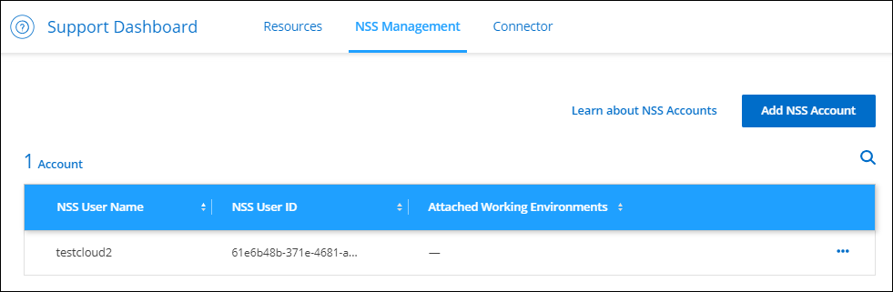

请求文档变更
请求文档变更 在 GitHub 上编辑
在 GitHub 上编辑 提供者指南
提供者指南新增功能
了解 Cloud Manager 管理功能的新增功能： NetApp 帐户，连接器，云提供商凭据等。
2022年7月15日
策略更改
我们通过直接在文档中添加Cloud Manager策略来更新文档。这意味着您现在可以查看Connector和Cloud Volumes ONTAP 所需的权限以及说明如何设置这些权限的步骤。以前可以从NetApp支持站点上的页面访问这些策略。
我们还创建了一个页面、用于提供指向每个策略的链接。 "查看Cloud Manager的权限摘要"。
2022年7月3日
连接器3.9.20
-
我们引入了一种新方法来导航到Cloud Manager界面中不断增长的功能列表。现在、将鼠标悬停在左侧面板上即可轻松找到所有熟悉的Cloud Manager功能。

-
现在、您可以将Cloud Manager配置为通过电子邮件发送通知、这样、即使您未登录到系统、您也可以了解重要的系统活动。
-
Cloud Manager现在支持Azure Blob存储和Google Cloud Storage作为工作环境、类似于Amazon S3支持。
在Azure或Google Cloud中安装Connector后、Cloud Manager现在会自动发现您的Azure订阅中的Azure Blob存储或安装了Connector的项目中的Google Cloud Storage的相关信息。Cloud Manager将对象存储显示为一个工作环境、您可以打开该环境以查看更多详细信息。
下面是Azure Blob工作环境的示例：

-
我们重新设计了Amazon S3工作环境的资源页面、提供了有关S3存储分段的更多详细信息、例如容量、加密详细信息等。
-
现在、以下Google Cloud地区支持Connector：
-
马德里(欧洲-西南1)
-
巴黎(欧洲-西部9)
-
华沙(欧洲中部2)
-
-
现在、Azure West US 3区域支持Connector。
-
此版本的连接器还包括Cloud Volumes ONTAP 增强功能。
2022年6月28日
使用NetApp凭据登录
当新用户注册到Cloud Central时、他们现在可以选择*使用NetApp*登录选项以使用其NetApp支持站点凭据登录。这是输入电子邮件地址和密码的替代方法。

|
使用电子邮件地址和密码的现有登录需要继续使用该登录方法。注册的新用户可以使用"Log in with NetApp"选项。 |
2022年6月7日
连接器3.9.19
-
现在、AWS雅加达地区(亚太地区东南部3)支持Connector。
-
现在、Azure巴西东南部地区支持Connector。
-
此版本的Connector还包括Cloud Volumes ONTAP 增强功能和内部ONTAP 集群增强功能。
2022年5月12日
连接器3.9.18修补程序
我们更新了Connector以引入错误修复。最值得注意的修复方法是、当问题描述 位于共享VPC中时、它会影响Google Cloud中的Cloud Volumes ONTAP 部署。
2022年5月2日
连接器3.9.18
-
现在、以下Google Cloud地区支持Connector：
-
新德里(亚洲-南2)
-
墨尔本(澳大利亚南部2)
-
米兰(欧洲-西部8)
-
圣地亚哥(南美洲-西维1)
-
-
当您选择要与Connector结合使用的Google Cloud服务帐户时、Cloud Manager现在会显示与每个服务帐户关联的电子邮件地址。通过查看电子邮件地址、可以更轻松地区分同名服务帐户。

-
我们已在具有支持的操作系统的VM实例上对Google Cloud中的Connector进行了认证 "屏蔽VM功能"
-
此版本的连接器还包括Cloud Volumes ONTAP 增强功能。 "了解这些增强功能"
-
要使Connector能够部署Cloud Volumes ONTAP 、需要新的AWS权限。
现在、在单个可用性区域(AZ)中部署HA对时、创建AWS分布放置组需要以下权限：
"ec2:DescribePlacementGroups", "iam:GetRolePolicy",现在、要优化Cloud Manager创建布局组的方式、需要这些权限。
请务必为您添加到Cloud Manager的每组AWS凭据提供这些权限。 "查看Connector的最新IAM策略"。
2022 年 4 月 3 日
连接器3.9.17
-
现在，您可以通过让 Cloud Manager 承担您在环境中设置的 IAM 角色来创建 Connector 。此身份验证方法比共享 AWS 访问密钥和机密密钥更安全。
-
此版本的连接器还包括Cloud Volumes ONTAP 增强功能。 "了解这些增强功能"
2022 年 2 月 27 日
连接器3.9.16
-
在 Google Cloud 中创建新的 Connector 时， Cloud Manager 现在将显示所有现有防火墙策略。以前， Cloud Manager 不会显示任何没有目标标记的策略。
-
此版本的连接器还包括Cloud Volumes ONTAP 增强功能。 "了解这些增强功能"
2022 年 1 月 30 日
连接器3.9.15
此版本的连接器包含Cloud Volumes ONTAP 增强功能。 "了解这些增强功能"
2022 年 1 月 2 日
用于 Connector 的 EBS 磁盘加密
现在，当您从 Cloud Manager 在 AWS 中部署新的 Connector 时，您可以选择使用默认主密钥或托管密钥对 Connector 的 EBS 磁盘进行加密。

NSS 帐户的电子邮件地址
Cloud Manager 现在可以显示与 NetApp 支持站点帐户关联的电子邮件地址。

2021 年 11 月 28 日
NetApp 支持站点帐户需要更新
从 2021 年 12 月开始， NetApp 现在使用 Microsoft Azure Active Directory 作为身份提供程序来提供特定于支持和许可的身份验证服务。执行此更新后， Cloud Manager 将提示您更新先前添加的任何现有 NetApp 支持站点帐户的凭据。
如果您尚未将 NSS 帐户迁移到 IDaaS ，则首先需要迁移此帐户，然后在 Cloud Manager 中更新凭据。
更改 Cloud Volumes ONTAP 的 NSS 帐户
如果您的组织有多个 NetApp 支持站点帐户，您现在可以更改与 Cloud Volumes ONTAP 系统关联的帐户。
2021 年 11 月 4 日
SOC 2 类型 2 认证
一家独立的认证公有会计师事务所和服务审计师对 Cloud Manager ， Cloud Sync ， Cloud Tiering ， Cloud Data sense 和 Cloud Backup （ Cloud Manager 平台）进行了检查，并确认他们已根据适用的信任服务标准获得 SOC 2 类型 2 报告。
不再支持将连接器用作代理
您不能再使用 Cloud Manager Connector 作为代理服务器从 Cloud Volumes ONTAP 发送 AutoSupport 消息。此功能已被删除，不再受支持。您需要通过 NAT 实例或环境的代理服务提供 AutoSupport 连接。
2021 年 10 月 31 日
使用服务主体进行身份验证
在 Microsoft Azure 中创建新的 Connector 时，您现在可以使用 Azure 服务主体进行身份验证，而不是使用 Azure 帐户凭据进行身份验证。
凭据增强功能
我们重新设计了 " 凭据 " 页面，以便于使用，并与 Cloud Manager 界面的当前外观一致。
2021 年 9 月 2 日
已添加新的通知服务
通知服务已推出，因此您可以查看在当前登录会话期间启动的 Cloud Manager 操作的状态。您可以验证操作是否成功或失败。 "了解如何监控帐户中的操作"。
2021 年 8 月 1 日
2021 年 7 月 7 日
添加连接器向导的增强功能
我们重新设计了 * 添加连接器 * 向导，以添加新选项并使其更易于使用。现在，您可以添加标记，指定角色（对于 AWS 或 Azure ），上传代理服务器的根证书，查看 Terraform 自动化的代码，查看进度详细信息等。
通过支持信息板管理 NSS 帐户
现在， NetApp 支持站点（ NSS ）帐户可通过支持信息板进行管理，而不是从设置菜单进行管理。通过此更改，可以更轻松地从一个位置查找和管理所有与支持相关的信息。

2021 年 5 月 5 日
时间线中的帐户
Cloud Manager 中的时间线现在显示与帐户管理相关的操作和事件。这些操作包括关联用户，创建工作空间和创建连接器等。如果您需要确定执行特定操作的人员，或者需要确定操作的状态，则检查时间线会很有帮助。
2021 年 4 月 11 日
API 直接调用 Cloud Manager
如果您配置了代理服务器，则现在可以启用一个选项，在不通过代理的情况下直接向 Cloud Manager 发送 API 调用。在 AWS 或 Google Cloud 中运行的 Connectors 支持此选项。
服务帐户用户
现在，您可以创建服务帐户用户。
服务帐户充当 " 用户 " ，可以通过授权 API 调用 Cloud Manager 来实现自动化。这样可以更轻松地管理自动化，因为您不需要基于可以随时离开公司的真实用户帐户构建自动化脚本。如果您使用的是联合，则可以创建令牌，而无需从云生成刷新令牌。
2021 年 2 月 9 日
支持信息板改进
我们更新了支持信息板，允许您添加 NetApp 支持站点凭据，以便为您注册支持。您也可以直接从信息板启动 NetApp 支持案例。只需单击帮助图标，然后单击 * 支持 * 。